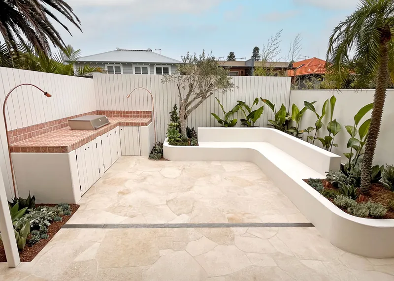
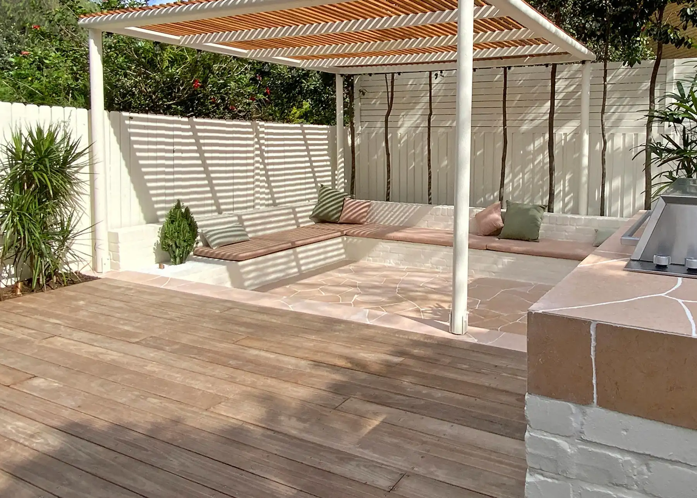
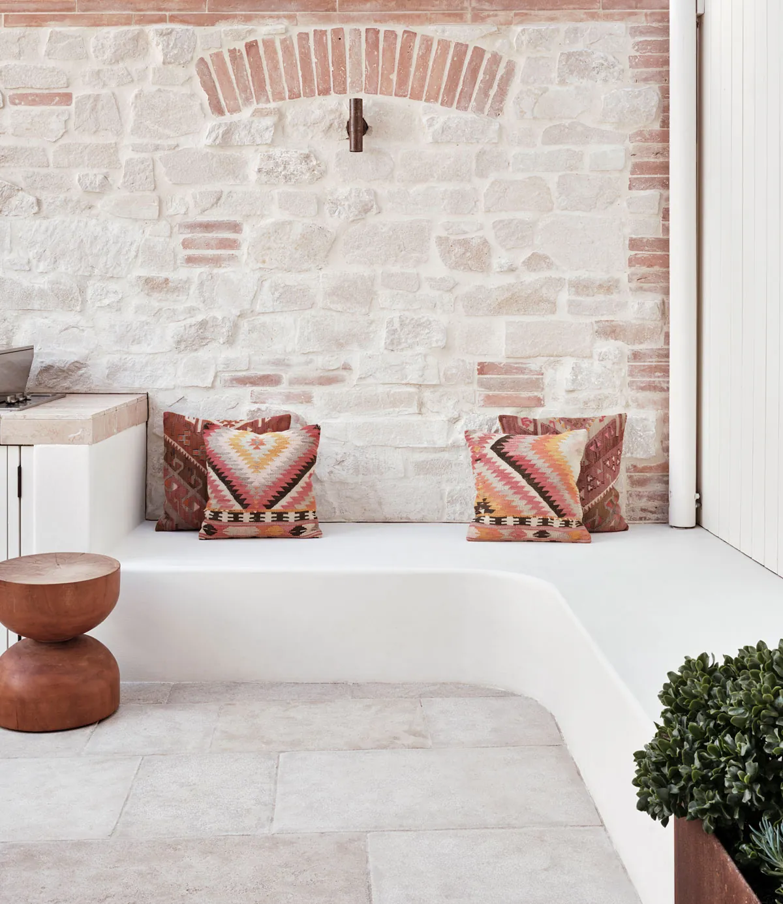
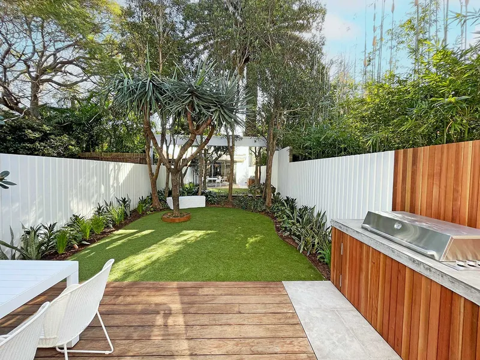
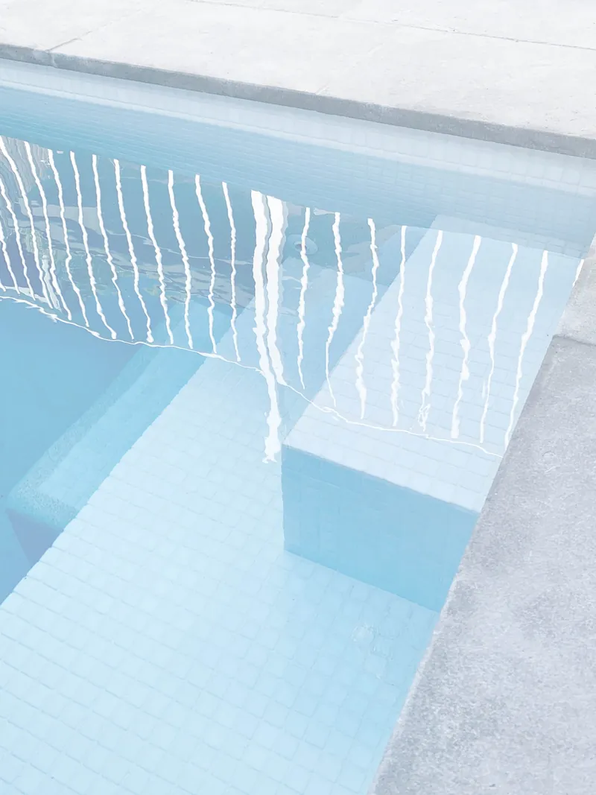
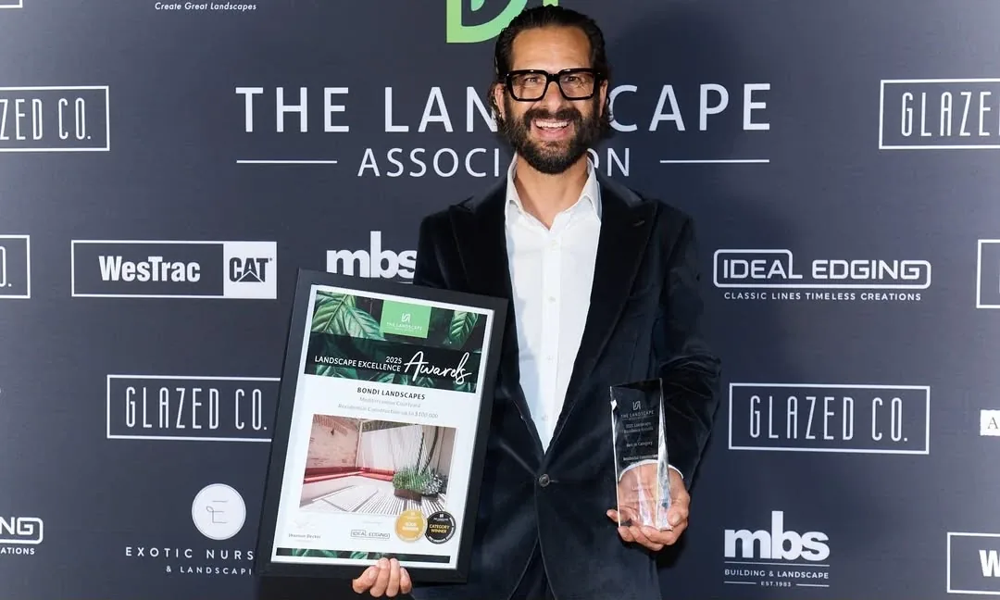

01
Landscape design
A full design for every project, whatever its size, so you and the build team are reading the same drawing.

Eastern Suburbs, Sydney
Landscape design, construction and pool building under one roof. We hold the landscape contractor's licence and the pool builder's licence — so the drawing, the build and the pool all answer to one team.
The difference
Most landscapers run three or four sites at once, and your garden becomes the one they visit between the others. Yours gets the crew until it is finished.
“Best part was they do one job at a time, so they smashed it out over a few weeks and no long delays.”
Kate Blake, Google

What we do
Design, construction and pools sit in the same office. Nothing is handed to a stranger halfway through, and nobody blames the drawing when the build gets hard.

A full design for every project, whatever its size, so you and the build team are reading the same drawing.

A licensed construction team. Hardscape, softscape, planting and installation, project-managed start to finish.

A boutique pool builder in our own right — not a landscaper who subcontracts the pool and hopes for the best.
One job at a time
Shaded terrace, Bondi
One garden. One crew. One responsibility.
Selected work
Six recent jobs across Bondi and the Eastern Suburbs. Every one designed, built and planted by the same team.
How it runs
From the first visit to the last plant. You approve the design and the price before anything is built.
We come to your home and talk through the vision, the objectives and the budget. You receive a Design Fee Proposal scaled to the project.
Design fees typically start from , scaled to the project.
A detailed landscape design, adjusted until you are completely happy. Where council approval is needed, we handle it.
A comprehensive quotation built on the approved design. Itemised and transparent, tailored to the project rather than a rate card.
Our licensed team builds it — hardscape, softscape, planting, installation. One job at a time, project-managed by us.

Who you are dealing with
Principal and director. A licensed landscape contractor and a licensed pool builder with more than twenty years behind him — a pairing most Sydney firms cannot offer, because it means holding two licences rather than subcontracting one out.
He visits every project himself at the start. Behind him is a tight-knit, multi-disciplinary team — Matt, Max, Tom, Sam and Jacob — whom clients name individually in their reviews, which tells you how long they have been together.
In their words
Real reviews from their Google profile. Clients name the crew individually, and several are on their second and third job.
Recognition
Judged by their peers, and answerable to an industry association rather than only to a review page.
Landscape Excellence Awards — Residential Construction up to $100,000, for Mediterranean Courtyard.
The same project took the category outright, judged by The Landscape Association.
Recognised on the platform architects and designers actually use.
A trade supplier who has vouched for them publicly: “very specific when it comes to the quality of plants they require.”
Where we work
Based in Bondi Beach. Most of the work sits within a few suburbs of it, and we travel across Sydney for the right project.
Before you call
Ourselves. We hold a pool builder's licence as well as a landscape contractor's licence. That is unusual — most landscapers subcontract the pool, which is where the finger-pointing starts when the pool and the garden do not meet properly. Here it is one contract and one team.
It depends entirely on scope, and we would rather tell you honestly after seeing the site than give you a number now. What we can promise is that we run one job at a time, so once we start we stay until it is done. One client's terrace garden — paving, fencing, a gate, lighting, irrigation and planting — was finished in three weeks.
Yes. Where a project needs council approval we manage that process as part of the design phase, so you are not chasing it yourself.
Design fees typically start from . They are scaled to the size and complexity of your project rather than charged at a flat rate. You approve the Design Fee Proposal before any design work begins.
Construction is quoted separately once the design is approved. Most projects of this kind land between , though that depends entirely on scope.
Often, yes — a good deal of our work sits alongside a renovation or a new build. Bring us in earlier rather than later. One client's only regret in their review was not involving us sooner.
Yes. We produce a full landscape design for every project regardless of size, courtyards and terraces included. Some of the work we are proudest of is small.
Because we run one job at a time, the honest answer depends on what is in front of yours. Call and we will tell you the real date rather than the one you want to hear.
Start a conversation
We read every enquiry. The more you can tell us about the property and what you want from it, the more useful the first conversation will be.